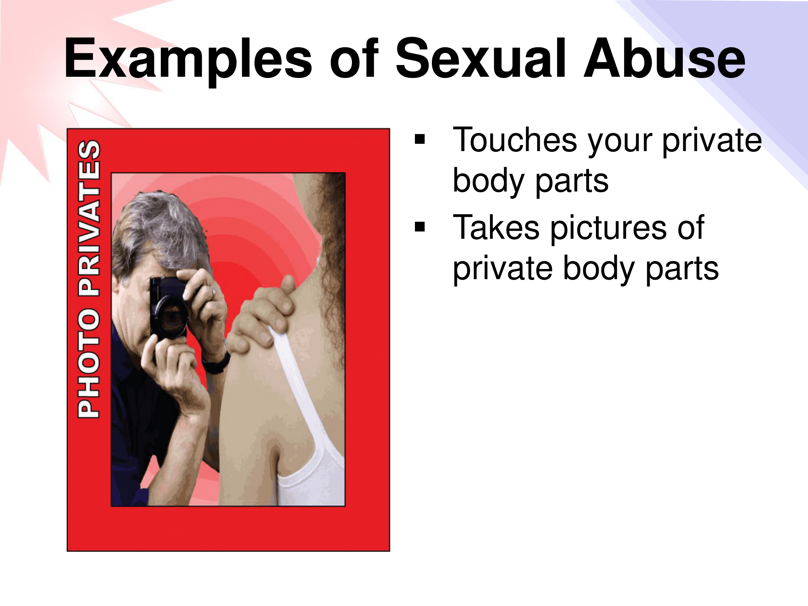
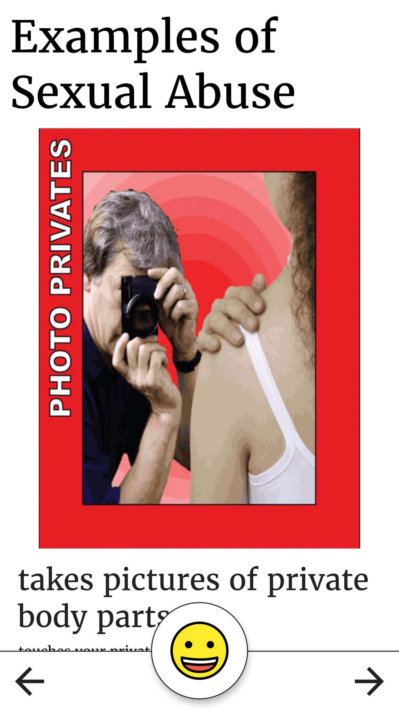
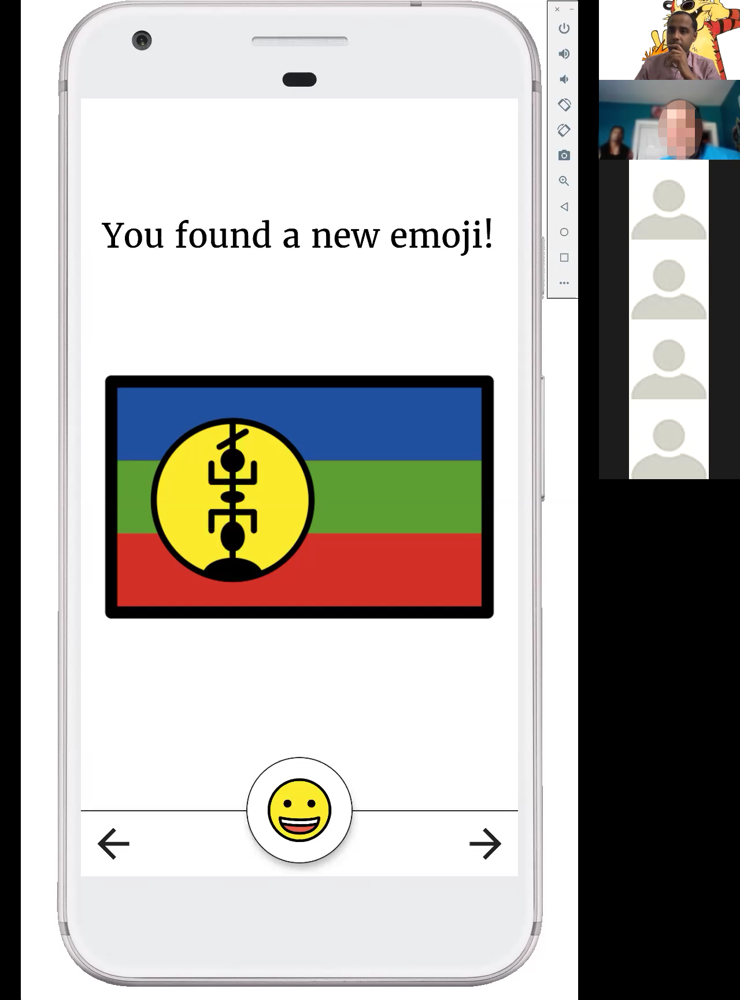
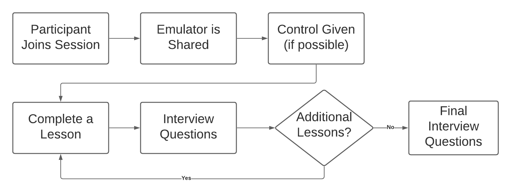
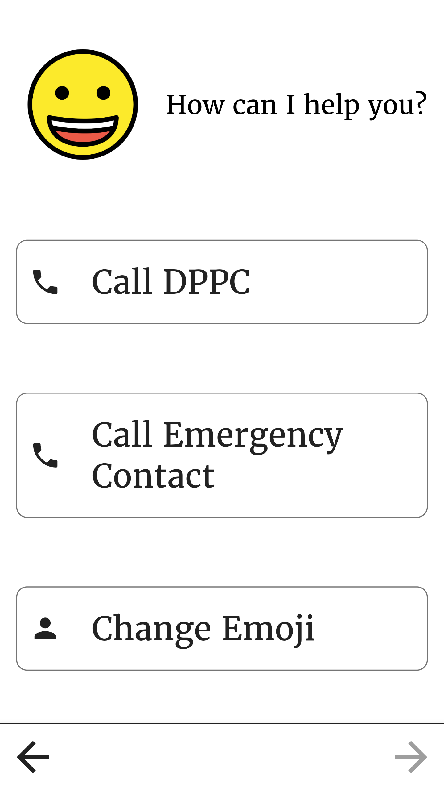

Using a Digital Application to
Refresh Knowledge of Abuse for
Individuals with Intellectual/Developmental Disabilities
Thomas Howard
University of Rhode Island
Krishna Venkatasubramanian,
Noah Daniels, William Kinnersley,
Kunal Mankodiya
Outline
- Introduction
- Collaborative Design
- Usability Evaluation Study
- Discussion
- Conclusions & Future Works
Introduction
Abuse is a Problem
Abuse is a Problem
Regarding individuals with I/DD
- 9/10 abused at least once 1
- 50% experience 10+ instances 1
- Often abused by known persons 2
- Abuse is severely under reported 1
- Trouble recognizing abuse 2
- How can we increase reporting?
[1] D. Valenti-Hein and L. Schwartz, The Sexual Abuse Interview for Those with Developmental
Disabilities. James Stanfield Company, 1995
[2] K. Venkatasubramanian et. al, “Exploring abuse reporting for people with intellectual and developmental disabilities,” in ACM CHI Conference on Human Factors in Computing Systems (In Review), 2021.
[2] K. Venkatasubramanian et. al, “Exploring abuse reporting for people with intellectual and developmental disabilities,” in ACM CHI Conference on Human Factors in Computing Systems (In Review), 2021.
Education as a Solution
Education as a Solution

- If you don't know, how can you report?
- Abuse prevention training is effective 1
- Shown to increase confidence 1
- Awareness and Action training
[1] K. Venkatasubramanian et. al, “Exploring abuse reporting for people with intellectual and
developmental disabilities,” in ACM CHI Conference on Human Factors in Computing Systems (In
Review), 2021.
[2] K. Ayres and D. Cihak, “Computer- and video-based instruction of food-preparation skills: Acquisition, generalization, and maintenance,” vol. 48,6 no. 3
[3] E. Buehler et. al, “Accessibility barriers to online education for young adults with intellectual disabilities,” in Proceedings of the 13th Web for All Conference, ser. W4A ’16. ACM
[2] K. Ayres and D. Cihak, “Computer- and video-based instruction of food-preparation skills: Acquisition, generalization, and maintenance,” vol. 48,6 no. 3
[3] E. Buehler et. al, “Accessibility barriers to online education for young adults with intellectual disabilities,” in Proceedings of the 13th Web for All Conference, ser. W4A ’16. ACM
Awareness and Action (A&A) Training
Awareness and Action (A&A) Training

- Conducted by self advocates
- For individuals with I/DD
- By individuals with I/DD
- Frequency is important to continued understanding 2
- Logistics of attending in-person training
- Taking home the training?
Digitizing the A&A training
Digitizing the A&A training

- Autonomous learning
- Refreshing A&A content vs teaching it
- Emotionally Difficult Material
- Intrinsic Motivation
Key Questions
- Can we apply elements of gamification to the application?
- Can we prevent individuals from becoming triggered?
- Can an application effectively 1 refresh knowledge from the A&A training?
[1] Within this work "effectiveness" is measured by users willingness to use the application
regularly and recommend others do the same.
Related Works
Related Works
- Individuals with I/DD and MOOCs
- Didn't look at autonomous MOOCs
- Barriers to learning autonomously
- Gamification for basic skills
- Frameworks for applying gamification for Individuals with I/DD
- No research uncovered on preventing triggering individuals with I/DD
| Concept | Description | Affected Behavior |
|---|---|---|
| Acknowledgement | Feedback that praises a players' actions | Engagement |
| Imposed Choice | Decisions the player is obligated to make for the game to advance | Engagement / Motivation |
| Social Pressure | Pressure through interactions with other players (real or NPC) | Engagement / Motivation |
Collaborative Design
Gathering Requirements
Gathering Requirements


- Personas 1
- Scenarios 2
- Use-Cases 2
- Requirements 2
- Low-Fidelity Prototypes
[1] A. Cooper,The Inmates Are Running the Asylum, C. Hall, Ed. Boger, Paul,1999.
[2] H. Sharp, Interaction Design: Beyond Human-Computer Interaction, Fifth Edition. Wiley and Sons Canada, Limited, John, 2019
[2] H. Sharp, Interaction Design: Beyond Human-Computer Interaction, Fifth Edition. Wiley and Sons Canada, Limited, John, 2019
Collaborative Design Session
Collaborative Design Session
- Six co-designers
- Four self-advocates, two coordinators
- Five prototypes to be presented
- Prototype projected and distributed
- Feedback gathered throughout session
| ID | Self-Advocate |
|---|---|
| C1 | check |
| C2 | check |
| C3 | check |
| C4 | check |
| C5 | close |
| C6 | close |
Medium-Fidelity Prototypes
Medium-Fidelity Prototypes
 Emotional Reinforcement
Emotional Reinforcement
 Grounding Activities
Grounding Activities
 Quizzes
Quizzes
 Interactive Elements
Interactive Elements
 Skills Activities
Skills Activities
Feedback: Emotional Reinforcement
"[the application should] never take anything away from somebody." - C5
- Generally negative
- Taking away happiness
- Avoid negative reinforcement
Feedback: Grounding Activities
C1: "I wanted to put some grounding games in, because that will-"
C2: "That'll keep people more engaged"
C1: "The training can be a little hard for people"
C2: "This is a tough subject."
- Very positive
- All participants valued this element
- Avoid mandatory fun
- Add a time limit
Feedback: Interactive Elements
"Can you see the smoke coming out of my ears yet?" - C5
"I like the concept, I like the idea and everything like that" - C4
- Generally positive
- Confusing interface
- Overly complicated
- Move to discrete clips
Feedback: Quizzes
- Very positive
- Would benefit users
- Not enough on its own
- Make it optional
Feedback: Skills Activities
- Generally positive
- Money Counting
- No Touch Zones
- Identifying Emotions was challenging
High-Fidelity Prototypes
Version A
 Version B
Version B
 Version C
Version C
 Grounding Activity
Grounding Activity
 Reward
Reward
Usability Evaluations
Study Methodology
Study Methodology

- Remote Synchronous Trials
- Six participants with I/DD
- Zoom Video Call
- Shared virtual emulator
- Remote control ceded where possible
- Interview Questions + Verbal Feedback
Study Participants
Study Participants
| ID | Age | Gender | Disability | Had Control | A&A Trainer |
|---|---|---|---|---|---|
| P1 | 34 | M | ASD | close | check |
| P2 | 46 | F | IDD - Hearing Loss | check close | check |
| P3 | 29 | M | Seizure Disorder, ASD | check | check |
| P4 | 43 | M | Acquired Brain Injury - IDD | check | history |
| P5 | 27 | M | William Syndrome, PTSD, Chronic Anxiety |
close | history |
| P6 | N/P | M | N/P | check | close |
Study Procedure
Study Procedure

- One hour per session
- Recorded in its entirety + researcher notes
Data Analysis
Data Analysis
- Thematic analysis over all sessions
- Iteratively developed code
| Theme | Example |
|---|---|
| Positive Reaction | "This is good" |
| Negative Reaction | "This is bad" |
| Intervention Required | "I need help" |
| Incorrect Response | "Oops" |
| Enhancements | "Add feature X" |
| A&A Connection | "This reminds me of x from A\&A" |
Results: Participants Favorites
Results: Participants Favorites
| Participant | Favorite | Middle | Least Favorite |
|---|---|---|---|
| P1 | B | C | A |
| P2 | C | A | B |
| P3 | B | C | A |
| P4 | C | B | A |
| P5 | C | B | A |
| P6 | B | A | C |
Version B and C tie with 3 votes each!
Results: Impact of Interaction
Results: Impact of Interaction
"The skills game make[s] it easier to identify what is." - P5
- Video quizzes were engaging
- Skills Activities were informative
- Lack of engagement with Slides
- Acknowledgement via Emojis
Results: Grounding Activities
Results: Grounding Activities
Where is there to go? Where is there to feel safe if you're technically supposed to already be in the safe spot?" - P5
- Extremely important
- Xylophone has potential (5/6)
Results: Effectiveness
Results: Effectiveness
- Recommending others download and use the final application
- Willingness to download and use
"if you do it less, then you're not gaining the strength to tell somebody, if you use it more then you're gonna be like okay, now I know I really need to say something. Cause' a lot of people just shut down, they get shocked, they don't know what to say, they don't know what to do, and I think that if it was more that it would definitely be a better thing to have." - P4
Discussion
Recommendations for Future Applications
Recommendations for Future Applications
- Combine the three presented prototypes
- Slides, Grounding, Video/Skills, Reward
Reporting Abuse
Reporting Abuse

- Brought up during usability evaluation
- Showing people what happened
- Calling DPPC using the buttons
Limitations
Limitations
- Accessibility was not in scope
- Population bias
- User device control
Conclusions & Future Work
Conclusions
- An effective application can be made.
- Remote synchronous evaluations are viable
- Individuals with I/DD need an application like the one presented here
Future Works: Large Scale Evaluations
- Focus on accessibility
- Large sample size
- Remote asynchronous
End
Emotional Reinforcement
- Virtual pet
- Happiness increases with training
- Happiness decays over time
- Maintaining happiness
- Intrinsic motivation
Grounding Activities
- Programmatic breaks
- Extremely difficult content
- Emotionally triggering
- First-hand experience
Interactive Elements
- Constant interaction
- Increased engagement
- Flagging abuse / not abuse
Quizzes
- Presented a traditional quiz
- Prompting users to think
- Only quizzes
Skills Activities
- Tangential skills
- Variety of activities
- No Touch Zones: Sexual Abuse
- Money Counting: Financial Abuse
- Identifying Emotions: More General